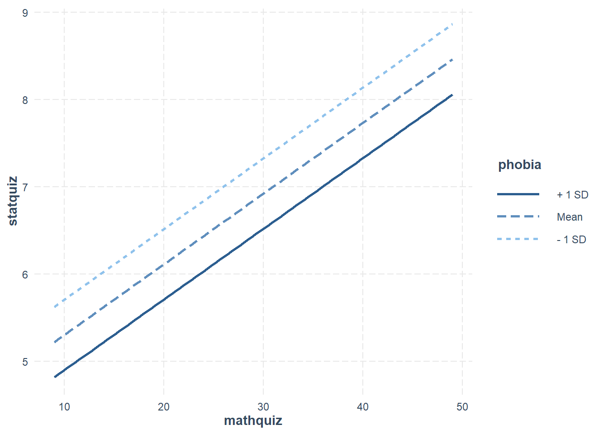

13 Ex: Linear - Ihno’s Experiment
interaction between two continuous IVs
Compiled: September 18, 2025

# install.packages("remotes")
# remotes::install_github("sarbearschwartz/apaSupp") # 9/17/2025
library(haven)
library(tidyverse)
library(flextable)
library(apaSupp) # not on CRAN, get from GitHub (above)
library(corrplot)
library(GGally)
library(naniar)
library(car)
library(performance)
library(ggResidpanel)
library(interactions)
library(effects)13.1 PURPOSE
13.1.1 Research Question
Does math phobia moderate the relationship between math and statistics performance? That is, does the assocation between math and stat quiz performance differ at variaous levels of math phobia?
13.1.2 Data Description
Inho’s dataset is included in the textbook “Explaining Psychological Statistics” (Cohen 2013) and details regarding the sample and measures is describe in this Encyclopedia’s Vol. 2 - Ihno’s Dataset.
13.1.2.1 Variables
statquizdependent variable (DV, Y): stat quiz score, max = 10mathquizindependent variable (IC, X1): prior math quiz score, max = 50phobiaindependent variable (IC, X2): self-reported math phobia, score of 0-10
df_ihno <- haven::read_spss("https://raw.githubusercontent.com/CEHS-research/eBook_regression/master/data/Ihno_dataset.sav") %>%
haven::zap_widths() %>%
haven::zap_label() %>%
haven::zap_formats() %>%
dplyr::rename_all(tolower) %>%
dplyr::mutate(gender = factor(gender,
levels = c(1, 2),
labels = c("Female",
"Male"))) %>%
dplyr::mutate(major = factor(major,
levels = c(1, 2, 3, 4,5),
labels = c("Psychology",
"Premed",
"Biology",
"Sociology",
"Economics"))) %>%
dplyr::mutate(reason = factor(reason,
levels = c(1, 2, 3),
labels = c("Program requirement",
"Personal interest",
"Advisor recommendation"))) %>%
dplyr::mutate(exp_cond = factor(exp_cond,
levels = c(1, 2, 3, 4),
labels = c("Easy",
"Moderate",
"Difficult",
"Impossible"))) %>%
dplyr::mutate(coffee = factor(coffee,
levels = c(0, 1),
labels = c("Not a regular coffee drinker",
"Regularly drinks coffee"))) %>%
dplyr::mutate(mathquiz = as.numeric(mathquiz))Rows: 100
Columns: 3
$ phobia <dbl> 1, 1, 4, 4, 10, 4, 4, 4, 4, 5, 5, 4, 7, 4, 3, 8, 4, 5, 0, 4, …
$ mathquiz <dbl> 43, 49, 26, 29, 31, 20, 13, 23, 38, NA, 29, 32, 18, NA, 21, N…
$ statquiz <dbl> 6, 9, 8, 7, 6, 7, 3, 7, 8, 7, 8, 8, 1, 5, 8, 3, 8, 7, 10, 7, …13.2 EXPLORATORY DATA ANALYSIS
Before embarking on any inferential analysis or modeling, always get familiar with your variables one at a time (univariate), as well as pairwise (bivariate).
13.2.1 Summary Statistics
13.2.1.1 Univariate
Center: mean and median Spread: standard deviation, range (max - min), interquartile range (Q3 - Q1)
df_ihno %>%
dplyr::select("Math Phobia" = phobia,
"Math Quiz" = mathquiz,
"Stat Quiz" = statquiz) %>%
apaSupp::tab_desc(caption = "Descriptive Summary of Participants")NA | M | SD | min | Q1 | Mdn | Q3 | max | |
|---|---|---|---|---|---|---|---|---|
Math Phobia | 0 | 3.31 | 2.44 | 0.00 | 1.00 | 3.00 | 4.00 | 10.00 |
Math Quiz | 15 | 29.07 | 9.48 | 9.00 | 22.00 | 30.00 | 35.00 | 49.00 |
Stat Quiz | 0 | 6.86 | 1.70 | 1.00 | 6.00 | 7.00 | 8.00 | 10.00 |
Note. N = 100. NA = not available or missing; Mdn = median; Q1 = 25th percentile; Q3 = 75th percentile. | ||||||||
13.2.1.2 Bivariate
When two variables are both continuous, correlations (Pearson’s \(R\)) are an important measure of association.
Notice the discrepancy between the correlation between statquiz and phobia. Above, the psych::pairs.panels() function uses pairwise complete cases by default, so \(r=-.39\) is computed on all \(n=100\) subjects. Below, we specified use = "complete.obs" in the cor() function, so all correlations will be based on the same \(n=85\) students, making it list wise complete. The choice of which method to you will vary by situation.
Often it is easier to digest a correlation matrix if it is visually presented, instead of just given as a table of many numbers. The corrplot package has a useful function called corrplot.mixed() for doing just that (Wei and Simko 2024).
df_ihno %>%
dplyr::select(phobia, mathquiz, statquiz) %>%
cor(use = "complete.obs") %>%
corrplot::corrplot.mixed(lower = "ellipse",
upper = "number",
tl.col = "black")
Figure 13.1
Visualize Correlation Matrix
df_ihno %>%
dplyr::select("Math Phobia" = phobia,
"Math Quiz" = mathquiz,
"Stat Quiz" = statquiz) %>%
apaSupp::tab_cor(caption = "Correlations")Variable Pair | r | p | |
|---|---|---|---|
Math Phobia | Math Quiz | -.280 | .009** |
Math Phobia | Stat Quiz | -.390 | < .001*** |
Math Quiz | Stat Quiz | .510 | < .001*** |
Note. N = 100. r = Pearson's Product-Moment correlation coefficient. | |||
* p < .05. ** p < .01. *** p < .001. | |||
13.2.2 Visualize Distributions
13.2.2.1 Univariate
Always plot your data first!
Figure 13.2
Distribution of Self-Reported Math Phobia

Figure 13.3
Distribution of Prior Math Quiz Performance
Figure 13.4
Distribution of Statistics Quiz Performance
13.2.2.2 Bivariate
df_ihno %>%
dplyr::select(phobia, mathquiz, statquiz) %>%
data.frame %>%
GGally::ggscatmat() +
theme_bw()
Figure 13.5
Pairs Plot
df_ihno %>%
ggplot(aes(x = mathquiz,
y = statquiz)) +
geom_point() +
theme_bw() +
geom_smooth(method = "lm",
formula = y ~ x) +
labs(x = "Math Quiz",
y = "Stat Quiz")
Figure 13.6
Scatterplot for Stat Quiz Regressed on Math Quiz

df_ihno %>%
ggplot(aes(x = phobia,
y = statquiz)) +
geom_point() +
theme_bw() +
geom_smooth(method = "lm",
formula = y ~ x) +
labs(x = "Math Phobia",
y = "Stat Quiz")
Figure 13.7
Scatterplot for Stat Quiz Regressed on Phobia

13.2.3 Missing Values
It turns out that 15 of the 100 students did not have a math quiz score recorded.
Figure 13.8
Missingness on Each Variable

df_ihno %>%
dplyr::filter(!complete.cases(mathquiz, statquiz, phobia)) %>%
dplyr::select(sub_num, mathquiz, statquiz, phobia)# A tibble: 15 × 4
sub_num mathquiz statquiz phobia
<dbl> <dbl> <dbl> <dbl>
1 10 NA 7 5
2 14 NA 5 4
3 16 NA 3 8
4 20 NA 7 4
5 29 NA 7 3
6 32 NA 7 3
7 42 NA 9 0
8 49 NA 5 5
9 51 NA 7 4
10 57 NA 8 2
11 65 NA 8 5
12 70 NA 7 3
13 77 NA 8 1
14 88 NA 8 1
15 95 NA 8 713.3 REGRESSION ANALYSIS
The lm() function must be supplied with at least two
options:
-
a formula:
Y ~ X -
a dataset:
data = XXXXXXX
When a model is fit and directly saved as a named object via the
assignment opperator (<-), no output is produced.
The dependent variable (DV) is Stat Quiz score,
statquiz(\(Y\))The independent variables (IVs) are both math quiz score
mathquizand math phobiaphobia(\(X_1\), \(X_2\))
All regression models can only be fit to complete observations regarding the variables included in the model (dependent and independent). Removing any case that is incomplete with respect to even one variables is called “list-wise deletion”.
In this analysis, models including the mathquiz variable will be fit on only 85 students (since 15 students did not take the math quiz), where as models not including this variable will be fit to all 100 students.
This complicates model comparisons, which require nested models be fit to the same data (exactly). For this reason, the dataset has been reduced to the subset of students that are complete regarding the three variables utilized throughout the set of five nested models.
df_ihno_fitting <- df_ihno %>%
dplyr::select(mathquiz, statquiz, phobia) %>%
dplyr::filter(complete.cases(mathquiz, statquiz, phobia))Rows: 85
Columns: 3
$ mathquiz <dbl> 43, 49, 26, 29, 31, 20, 13, 23, 38, 29, 32, 18, 21, 37, 37, 3…
$ statquiz <dbl> 6, 9, 8, 7, 6, 7, 3, 7, 8, 8, 8, 1, 8, 8, 7, 10, 7, 4, 8, 8, …
$ phobia <dbl> 1, 1, 4, 4, 10, 4, 4, 4, 4, 5, 4, 7, 3, 4, 5, 0, 4, 3, 4, 0, …13.3.1 Fit Models
The bottom-up approach consists of starting with an initial NULL model with only an intercept term and them building additional models that are nested.
Two models are considered nested if one is contains a subset of the terms (predictors or IV) compared to the other.
fit_ihno_lm_0 <- lm(statquiz ~ 1, data = df_ihno_fitting)
fit_ihno_lm_1 <- lm(statquiz ~ mathquiz, data = df_ihno_fitting)
fit_ihno_lm_2 <- lm(statquiz ~ phobia, data = df_ihno_fitting)
fit_ihno_lm_3 <- lm(statquiz ~ mathquiz + phobia, data = df_ihno_fitting)
fit_ihno_lm_4 <- lm(statquiz ~ mathquiz*phobia, data = df_ihno_fitting)
Call:
lm(formula = statquiz ~ 1, data = df_ihno_fitting)
Residuals:
Min 1Q Median 3Q Max
-5.8471 -0.8471 0.1529 1.1529 3.1529
Coefficients:
Estimate Std. Error t value Pr(>|t|)
(Intercept) 6.8471 0.1882 36.37 <2e-16 ***
---
Signif. codes: 0 '***' 0.001 '**' 0.01 '*' 0.05 '.' 0.1 ' ' 1
Residual standard error: 1.736 on 84 degrees of freedom
Call:
lm(formula = statquiz ~ mathquiz, data = df_ihno_fitting)
Residuals:
Min 1Q Median 3Q Max
-4.8178 -0.9335 0.2525 0.9963 2.8806
Coefficients:
Estimate Std. Error t value Pr(>|t|)
(Intercept) 4.14424 0.52899 7.834 1.39e-11 ***
mathquiz 0.09297 0.01731 5.371 7.00e-07 ***
---
Signif. codes: 0 '***' 0.001 '**' 0.01 '*' 0.05 '.' 0.1 ' ' 1
Residual standard error: 1.504 on 83 degrees of freedom
Multiple R-squared: 0.2579, Adjusted R-squared: 0.249
F-statistic: 28.85 on 1 and 83 DF, p-value: 6.999e-07
Call:
lm(formula = statquiz ~ phobia, data = df_ihno_fitting)
Residuals:
Min 1Q Median 3Q Max
-4.9136 -0.9085 0.3402 1.3402 2.5838
Coefficients:
Estimate Std. Error t value Pr(>|t|)
(Intercept) 7.65469 0.29158 26.252 < 2e-16 ***
phobia -0.24873 0.07139 -3.484 0.000791 ***
---
Signif. codes: 0 '***' 0.001 '**' 0.01 '*' 0.05 '.' 0.1 ' ' 1
Residual standard error: 1.631 on 83 degrees of freedom
Multiple R-squared: 0.1276, Adjusted R-squared: 0.1171
F-statistic: 12.14 on 1 and 83 DF, p-value: 0.0007912
Call:
lm(formula = statquiz ~ mathquiz + phobia, data = df_ihno_fitting)
Residuals:
Min 1Q Median 3Q Max
-4.3436 -0.8527 0.2805 0.9857 2.7370
Coefficients:
Estimate Std. Error t value Pr(>|t|)
(Intercept) 5.01860 0.62791 7.993 7.23e-12 ***
mathquiz 0.08097 0.01754 4.617 1.42e-05 ***
phobia -0.16176 0.06670 -2.425 0.0175 *
---
Signif. codes: 0 '***' 0.001 '**' 0.01 '*' 0.05 '.' 0.1 ' ' 1
Residual standard error: 1.462 on 82 degrees of freedom
Multiple R-squared: 0.3076, Adjusted R-squared: 0.2907
F-statistic: 18.21 on 2 and 82 DF, p-value: 2.849e-07
Call:
lm(formula = statquiz ~ mathquiz * phobia, data = df_ihno_fitting)
Residuals:
Min 1Q Median 3Q Max
-4.1634 -0.8433 0.2832 0.9685 2.9434
Coefficients:
Estimate Std. Error t value Pr(>|t|)
(Intercept) 5.600183 0.907824 6.169 2.57e-08 ***
mathquiz 0.061216 0.028334 2.161 0.0337 *
phobia -0.339426 0.210907 -1.609 0.1114
mathquiz:phobia 0.006485 0.007303 0.888 0.3771
---
Signif. codes: 0 '***' 0.001 '**' 0.01 '*' 0.05 '.' 0.1 ' ' 1
Residual standard error: 1.464 on 81 degrees of freedom
Multiple R-squared: 0.3143, Adjusted R-squared: 0.2889
F-statistic: 12.37 on 3 and 81 DF, p-value: 9.637e-07b | (SE) | p |
| VIF |
|
| |
|---|---|---|---|---|---|---|---|
(Intercept) | 5.02 | (0.63) | < .001*** | ||||
mathquiz | 0.08 | (0.02) | < .001*** | 0.44 | 1.09 | .180 | .206 |
phobia | -0.16 | (0.07) | .017* | -0.23 | 1.09 | .050 | .067 |
R² | .308 | ||||||
Adjusted R² | .291 | ||||||
Note. N = 85. = standardize coefficient; VIF = variance inflation factor; = semi-partial correlation; = partial correlation; p = significance from Wald t-test for parameter estimate. | |||||||
* p < .05. ** p < .01. *** p < .001. | |||||||
13.3.2 Comparing Models
13.3.2.1 Table
In single level, multiple linear regression significance of predictors (independent variables, IV) is usually based on both the Wald tests of significance for each beta estimate (shown with stars here) and comparisons in the model fit via the \(R^2\) values.
| Model 1 | Model 2 | ||||
|---|---|---|---|---|---|---|
Variable | b | (SE) | p | b | (SE) | p |
(Intercept) | 5.02 | (0.63) | < .001*** | 5.60 | (0.91) | < .001*** |
mathquiz | 0.08 | (0.02) | < .001*** | 0.06 | (0.03) | .034* |
phobia | -0.16 | (0.07) | .017* | -0.34 | (0.21) | .111 |
mathquiz * phobia | 0.01 | (0.01) | .377 | |||
AIC | 310.69 | 311.87 | ||||
BIC | 320.46 | 324.08 | ||||
R² | .308 | .314 | ||||
Adjusted R² | .291 | .289 | ||||
Note. | ||||||
* p < .05. ** p < .01. *** p < .001. | ||||||
apaSupp::tab_lms(list("Main Effects" = fit_ihno_lm_3,
"Moderation" = fit_ihno_lm_4),
var_labels = c("mathquiz" = "Math Quiz",
"phobia" = "Math Phobia",
"mathquiz * phobia" = "Quiz X Phobia"),
caption = "Multiple Linear Models for Statistics Quiz Performance Regressed on Math Phobia and Prior Math Performance",
general_note = "Math Phobia was self-reported on a scale of 0 (none) to 10 (max) and the math quiz had a max of 50 points while the statistics quiz had a max of 10 points. NA = not applicable, since variable not included in this model.")
| Main Effects | Moderation | ||||
|---|---|---|---|---|---|---|
Variable | b | (SE) | p | b | (SE) | p |
(Intercept) | 5.02 | (0.63) | < .001*** | 5.60 | (0.91) | < .001*** |
Math Quiz | 0.08 | (0.02) | < .001*** | 0.06 | (0.03) | .034* |
Math Phobia | -0.16 | (0.07) | .017* | -0.34 | (0.21) | .111 |
Quiz X Phobia | 0.01 | (0.01) | .377 | |||
AIC | 310.69 | 311.87 | ||||
BIC | 320.46 | 324.08 | ||||
R² | .308 | .314 | ||||
Adjusted R² | .291 | .289 | ||||
Note. Math Phobia was self-reported on a scale of 0 (none) to 10 (max) and the math quiz had a max of 50 points while the statistics quiz had a max of 10 points. NA = not applicable, since variable not included in this model. | ||||||
* p < .05. ** p < .01. *** p < .001. | ||||||
13.3.2.2 Test
- Test the main effect of math quiz:
# A tibble: 2 × 6
Res.Df RSS Df `Sum of Sq` F `Pr(>F)`
<dbl> <dbl> <dbl> <dbl> <dbl> <dbl>
1 84 253. NA NA NA NA
2 83 188. 1 65.3 28.8 0.000000700- Test the main effect of math phobia
# A tibble: 2 × 6
Res.Df RSS Df `Sum of Sq` F `Pr(>F)`
<dbl> <dbl> <dbl> <dbl> <dbl> <dbl>
1 84 253. NA NA NA NA
2 83 221. 1 32.3 12.1 0.000791- Test the main effect of math phobia, after controlling for math test
# A tibble: 2 × 6
Res.Df RSS Df `Sum of Sq` F `Pr(>F)`
<dbl> <dbl> <dbl> <dbl> <dbl> <dbl>
1 83 188. NA NA NA NA
2 82 175. 1 12.6 5.88 0.0175- Test the main effect of math math test, after controlling for phobia
# A tibble: 2 × 6
Res.Df RSS Df `Sum of Sq` F `Pr(>F)`
<dbl> <dbl> <dbl> <dbl> <dbl> <dbl>
1 83 221. NA NA NA NA
2 82 175. 1 45.5 21.3 0.0000142- Test the interaction between math test and math phobia (i.e. moderation)
# A tibble: 2 × 6
Res.Df RSS Df `Sum of Sq` F `Pr(>F)`
<dbl> <dbl> <dbl> <dbl> <dbl> <dbl>
1 82 175. NA NA NA NA
2 81 173. 1 1.69 0.789 0.37713.3.3 Assumptions Checking
13.3.4 Visualize Relationships
When a model only contains main effects, a plot is not important for interpretation, but can help understand the relationship between multiple predictors.

Interval = 95% Confidence Interval
interactions::interact_plot(model = fit_ihno_lm_3,
pred = mathquiz,
modx = phobia,
modx.values = c(0, 5, 10),
interval = TRUE)
Interval = plus-or-minus one standard error for the mean (SEM)
interactions::interact_plot(model = fit_ihno_lm_3,
pred = mathquiz,
modx = phobia,
modx.values = c(0, 5, 10),
interval = TRUE,
int.width = .68) +
theme_bw()
interactions::interact_plot(model = fit_ihno_lm_3,
pred = phobia,
modx = mathquiz,
modx.values = c(15, 30, 45),
interval = TRUE,
int.width = .68) +
theme_bw()The Effect() function from the effects package chooses ‘5 or 6 nice values’ for each of your continuous independent variable (\(X's\)) based on the range of values found in the dataset on which the model and plugs all possible combinations of them into the regression equation \(Y = \beta_0 + \beta_1 X_1 + \beta_2 X_2 \dots \beta_k X_k\) to compute the predicted mean value of the outcome (\(Y\)) (Fox et al. 2025).
When plotting a regression model the outcome (dependent variable) is
always on the y-axis (fit) and only one predictor
(independent variable) may be used on the x-axis. You may incorporate
additional predictor using colors, shapes, line types, or facets. For
these predictors, you will want to specify only 2-4 values for
illustration and then declare them as factors prior to plotting.
13.4 APA WRITE-UP
13.4.2 Results
There is evidence both
mathquizandphobiaare associated withstatquizand that the relationship is addative (i.e. no interaction).
There is a strong association between math and stats quiz scores, r = .51. Math phobia is associated with lower math, r = -.28, and stats quiz scores, r = -.36. When considered together, the combined effects of math phobia and math score account for 31% of the variance in statistical achievement.
Not surprisingly, while higher self-reported math phobia was associated with lower statistics scores, b = -0.162, p = .018, 95% CI = [-0.29, -0.03], higher math quiz scores were associated with higher stats score, b = -0.081, p < .001, 95% CI = [0.05, 0.12].
There was no evidence that math phobia moderated the relationship between math and quiz performance, p = .377.
13.4.3 Table
Many journals prefer that regression tables include 95% confidence intervals, rater than standard errors for the beta estimates.
apaSupp::tab_lm(fit_ihno_lm_3,
var_labels = c("mathquiz" = "Math Quiz",
"phobia" = "Math Phobia"),
caption = "Multiple Linear Models for Statistics Quiz Performance Regressed on Math Phobia and Prior Math Performance",
general_note = "Math Phobia was self-reported on a scale of 0 (none) to 10 (max) and the math quiz had a max of 50 points while the statistics quiz had a max of 10 points.",
p_note = "apa13") b | (SE) | p |
|
|
| |
|---|---|---|---|---|---|---|
(Intercept) | 5.02 | (0.63) | < .001*** | |||
Math Quiz | 0.08 | (0.02) | < .001*** | 0.44 | .180 | .206 |
Math Phobia | -0.16 | (0.07) | .017* | -0.23 | .050 | .067 |
R² | .308 | |||||
Adjusted R² | .291 | |||||
Note. N = 85. = standardize coefficient; = semi-partial correlation; = partial correlation; p = significance from Wald t-test for parameter estimate. Math Phobia was self-reported on a scale of 0 (none) to 10 (max) and the math quiz had a max of 50 points while the statistics quiz had a max of 10 points. | ||||||
* p < .05. *** p < .001. | ||||||
13.4.4 Plot
effects::Effect(focal.predictors = c("mathquiz", "phobia"),
mod = fit_ihno_lm_3,
xlevels = list(phobia = c(0, 5, 10))) %>% # values for illustration
data.frame() %>%
dplyr::mutate(phobia = factor(phobia,
levels = c(0, 5, 10),
labels = c(" 0 = minimun",
" 5 = middle",
"10 = maximum"))) %>% # factor for illustration
ggplot() +
aes(x = mathquiz,
y = fit,
group = phobia) +
geom_ribbon(aes(ymin = fit - se,
ymax = fit + se),
alpha = .15) +
geom_line(aes(linetype = phobia),
linewidth = 1) +
theme_bw() +
labs(x = "Score on Math Quiz",
y = "Estimated Marginal Mean\nScore on Stat Quiz",
linetype = "Self-Rated Math Phobia") +
theme(legend.background = element_rect(color = "black"),
legend.position = c(0, 1),
legend.key.width = unit(2, "cm"),
legend.justification = c(-0.1, 1.1)) +
scale_linetype_manual(values = c("solid", "longdash", "dotted"))
Figure 13.10
Statistics Quiz Performance Regressed on Math Phobia and Prior Math Performance